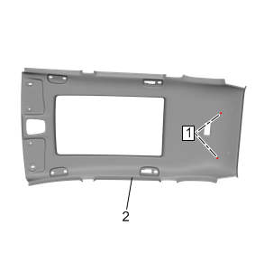

车顶内衬装饰板的更换
拆卸程序
1.
停用辅助充气式约束系统。
辅助充气式约束系统停用和启用
2.
遮阳板»拆卸—
遮阳板的更换
3.
遮阳板支架»拆卸—
遮阳板支架的更换
4.
车顶控制台»拆卸—
车顶控制台的更换
5.
车顶纵梁前储物箱»拆卸—
车顶纵梁前储物箱的更换
6.
车顶纵梁后辅助把手»拆卸—
车顶纵梁后辅助把手的更换
7.
车顶纵梁后排座椅位置阅读灯和门控灯»拆卸—
车顶纵梁后排座椅位置阅读灯和门控灯的更换
8.
后座椅位置中央阅读灯»拆卸—
后座椅位置中央阅读灯的更换
9.
挡风玻璃装饰条»拆卸—
挡风玻璃装饰条的更换
10.
中柱上装饰板»拆卸—
中柱上装饰板的更换
11.
车身门锁立柱上装饰板»拆卸—
车身门锁立柱上装饰板的更换
12.
拆下车身侧后窗装饰条。
车身侧后窗装饰条的更换（六座）
、
车身侧后窗装饰条的更换（五座）
13.
将驾驶员和乘客座椅移到最前位置并进行倾角调节。

14.
车顶内衬装饰板固定件(1)»拆除[2x]
15.
降下车顶内衬。
16.
断开电气连接器。
17.
在助手的帮助下，通过后侧门从车辆上拆下车顶内衬装饰板总成(2)。
18.
拆卸前注意线束的布线，以便重新装配，并确保正确安装。
安装程序
1.
将旧饰板用作模版，在干净平坦的表面上规划线束的排布。
2.
在饰板上规划好线束后，确保所有的电气连接器已就位。将线束粘在新饰板上。
3.
在助手的帮助下，通过后侧门将车顶内衬装饰板总成(2)定位到车辆中。
4.
连接电气连接器。
5.
使用高粘性胶带将任何未使用的连接器粘贴在车顶内衬上。
6.
车顶内衬固定件(1)»安装[2x]
7.
车身侧后窗装饰条»安装—
车身侧后窗装饰条的更换（六座）
、
车身侧后窗装饰条的更换（五座）
8.
车身门锁立柱上装饰板»安装—
车身门锁立柱上装饰板的更换
9.
中柱上装饰板»安装—
中柱上装饰板的更换
10.
挡风玻璃装饰条»安装—
挡风玻璃装饰条的更换
11.
后座椅位置中央阅读灯»安装—
后座椅位置中央阅读灯的更换
12.
车顶纵梁后排座椅位置阅读灯和门控灯»安装—
车顶纵梁后排座椅位置阅读灯和门控灯的更换
13.
车顶纵梁后辅助把手»安装—
车顶纵梁后辅助把手的更换
14.
车顶纵梁前储物箱»安装—
车顶纵梁前储物箱的更换
15.
车顶控制台»安装—
车顶控制台的更换
16.
遮阳板支架»安装—
遮阳板支架的更换
17.
遮阳板»安装—
遮阳板的更换
18.
启用辅助充气式约束系统。
辅助充气式约束系统停用和启用